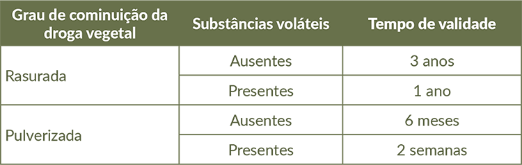

Vantagens da utilização de droga vegetal rasurada:
• Acesso e aquisição mais fáceis.
• Favorece o autocuidado do paciente ao permitir uma preparação caseira.
Desvantagens da utilização de droga vegetal rasurada:
• Dificuldade na identificação correta de algumas espécies vegetais. Leia o exemplo na dica técnica.
• Menor tempo de conservação do que os derivados vegetais, embora possua maior prazo de conservação em relação à droga pulverizada (Tabela).
Tempo de validade de droga vegetal rasurada e pulverizada com ou sem substâncias voláteis produzidas em Farmácias Vivas.

Fonte: Pereira et al., 2023, adaptado de Wichtl, 2004.